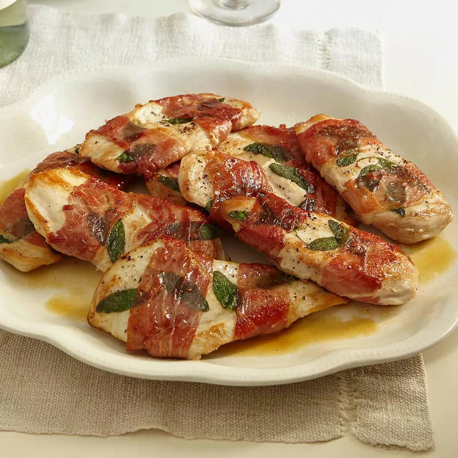

Chicken saltimbocca is quick, easy, and so delicious! Saltimbocca is a traditional Italian dish made with veal, but I prefer to use chicken cutlets. Once you taste the mouth-watering combination of chicken, sage, and prosciutto in a buttery sauce, you'll know why the Italians love it so much!
